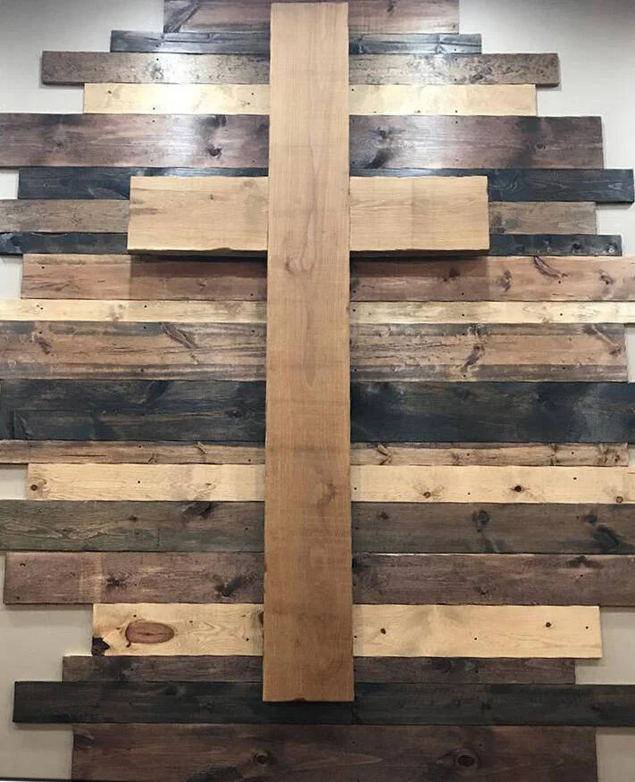

"Do not be anxious about anything, but in every situation, by prayer and petition, with thanksgiving, present your requests to God." — Philippians 4:6

At Chesterfield Community Church of God, we believe deeply in the power of unified prayer. Our pastoral staff and prayer chain intercede regularly for our community.
Available for hospital visitation, phone prayer, and one-on-one spiritual support.
You can choose whether your request is shared with our dedicated church prayer chain or kept strictly confidential among pastoral staff only.
Direct Pastoral Care: (765) 378-7685
Office Hours: Mon – Wed 9:00 AM – 1:00 PM
Prayer is not merely something we do—it is the heartbeat of Chesterfield Community Church. Here are the active ways our church body joins together to intercede for you and our community.
An active, confidential network of faithful prayer warriors ready to lift immediate needs, emergency requests, and praises to God day and night.
Rev. Becky Fauntleroy and our pastoral care team provide visits, anointing, and prayer for those hospitalized, undergoing surgery, or homebound.
Every Wednesday evening, our church family gathers in a warm, relaxed atmosphere to study God’s Word and devote time to corporate prayer.
During each Sunday morning 10:30 AM worship service, our altars are open for those seeking personal prayer, salvation, healing, or guidance with our ministry team.
Our church body is actively united in prayer as our search committee seeks God’s chosen shepherd for the next season of fruitful ministry at Chesterfield Community Church of God.
Trusting God’s Perfect Timing
“And I will give you shepherds after my own heart, who will feed you with knowledge and understanding.”
— Jeremiah 3:15
Chesterfield Community Church of God
Have questions, pastoral recommendations, or a word of encouragement for the search team? You can reach out directly to our committee co-chairs:
Cecelia Dickey
Search Committee Co-Chair
Robert Hazen
Search Committee Co-Chair
Pray for spiritual discernment, godly wisdom, and harmonious unity of heart for Cecelia Dickey, Robert Hazen, and each member of the committee as they review credentials, interview candidates, and seek God’s leading.
Pray that the Lord is already preparing the heart and mind of our future pastor. Ask God to grant their family peace, clear direction, and joyous excitement as they prepare to answer the call to shepherd our flock.
Pray that our entire congregation remains steadfast in love, patience, and mutual encouragement during this transitional chapter, actively serving in ministries and warmly welcoming newcomers each Sunday.
Chesterfield Community Church has stood strong and debt-free since 1957. We praise God for our heritage and pray that our fourfold calling—Know Christ, Grow in Christ, Care as Christ, and Share Christ Unconditionally—continues to transform lives.